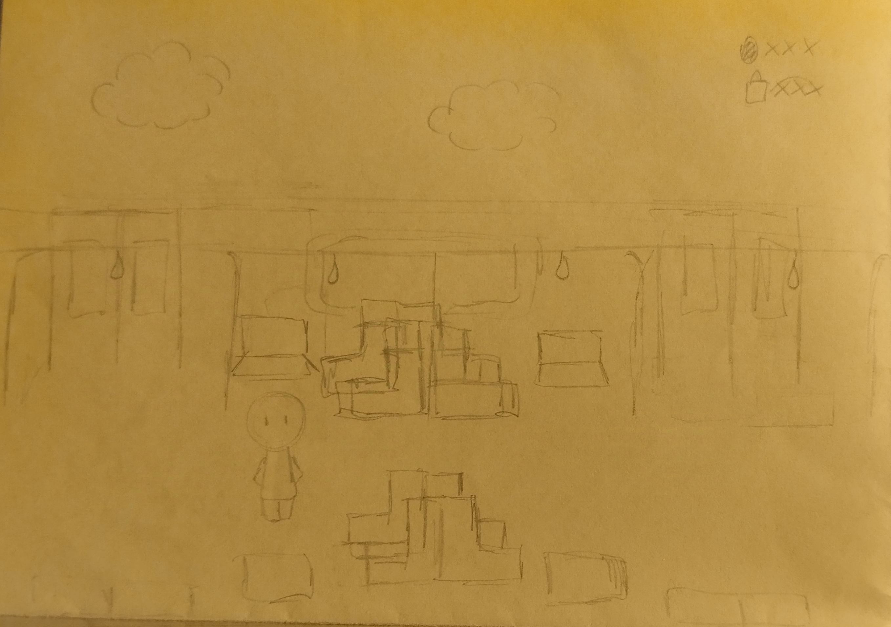
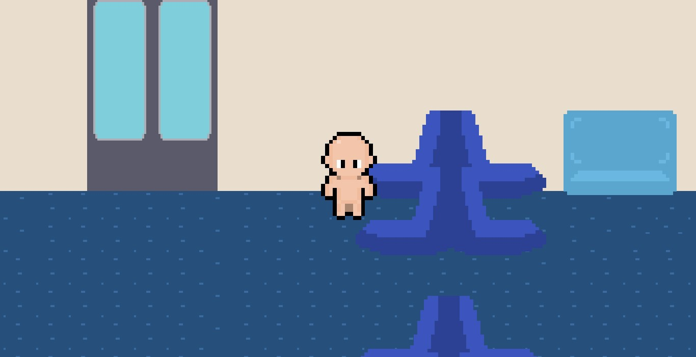
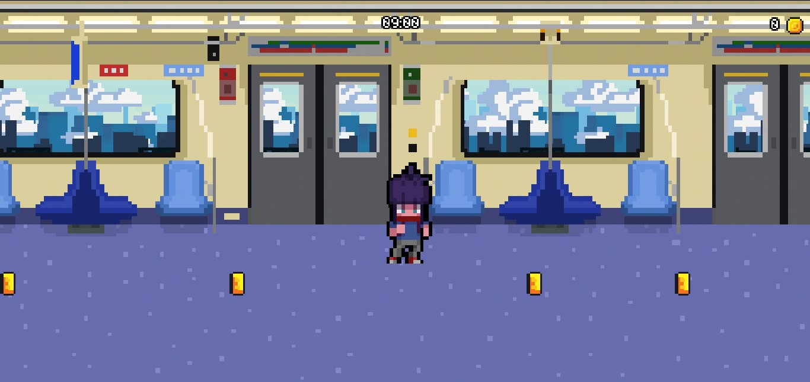
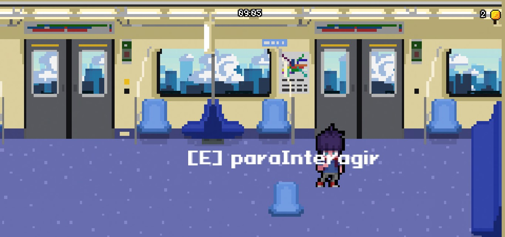
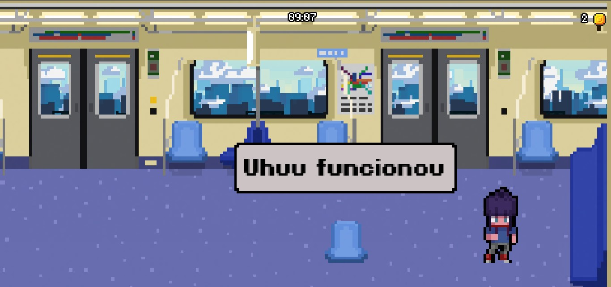
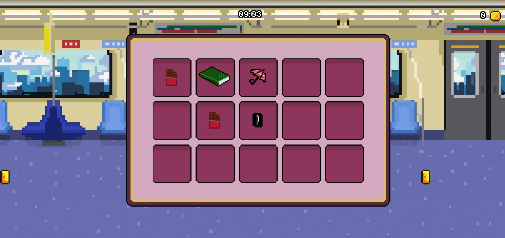

Nunca imaginamos que criar um jogo seria um processo tão caótico.
Quando tomamos conhecimento do trabalho, ficamos extremamente empolgados, pensando em várias ideias. Foi enquanto voltávamos da escola para casa, no caminho da estação Armênia até a Sé, que tivemos nossa ideia.
Queríamos fazer um jogo com algum cenário comum à maioria dos nossos colegas. Pensamos primeiramente na escola, mas achamos muito básico. Foi aí que tivemos a ideia de um jogo que se passasse inteiramente dentro do metrô.
Sempre nos interessamos muito por essa bagunça organizada que é o metrô de São Paulo, com suas várias linhas, estações e baldeações.
Nessa hora, surgiram muitas ideias, desde lutas entre vagões de metrôs até corridas entre linhas, mas optamos por uma mecânica ainda mais identificável, que é o “simples” trajeto da estação de partida até o destino de um indivíduo qualquer.
Foi assim que criamos Pedro Braga. Ele representa toda e qualquer pessoa que utiliza o metrô para se locomover. Queríamos deixar seu trajeto o mais verídico possível, e por isso colocamos em seu caminho personagens comuns de se encontrar no metrô, como senhorinhas, vendedores ambulantes e músicos.
Ainda sim, para fazer nosso jogo divertido, colocamos recompensas no caminho (a maioria delas, não tão realista). O personagem pode ganhar itens, que ficarão em seu inventário, ou moedas, que podem ajudá-lo a comprar outros itens. Tudo isso enquanto vai até seu destino final.
Não demorou muito para percebermos que nossa ideia era muito mirabolante para os conhecimentos e o tempo que tínhamos.
Nossa ideia principal era fazer com que Pedro entrasse na estação Jabaquara e saísse na estação Tucuruvi, passando pelas 23 estações da linha azul do metrô, cada uma contendo um desafio diferente. Chegamos a planejar tudo isso mas, em uma conversa que tivemos com nosso veterano Yago, fomos aconselhados a manter nossa ideia, mas diminuir a quantidade de estações, já que nosso tempo era curto.
Com isso em mente, começamos a aprender a usar a Godot, que foi a engine que escolhemos. Ela é conhecida por ser bem intuitiva, fácil de aprender e boa para jogos 2D.
Vimos vários tutoriais e vídeos que ensinavam a utilizá-la até que ganhássemos confiança de iniciar nosso jogo.
A Júlia fez a base das ilustrações, apenas para que tivéssemos uma ideia de como ficaria nosso cenário.
 Depois, essas ilustrações foram refinadas pela Luana, e são elas que utilizamos até o final do Next Station, que é a versão que está no ar agora.
O Adriano entrou depois na equipe, após algumas confusões para formar os grupos, mas aprendeu logo a como utilizar a engine e fez toda a parte da interação entre personagens.
 A Júlia também fez a parte do inventário, que guardaria todos os itens coletados pelo personagem durante o jogo.
O Gabriel ficou na liderança do grupo e auxiliou a todos na utilização da engine e do GitHub, além de fazer boa parte dos códigos.
Falando no GitHub, este foi nosso maior desafio. Não sabíamos como utilizá-lo exatamente, muito menos como utilizar o GitHub Desktop, que facilitaria nossa vida. Até aprendermos, foi necessária a criação de diversos repositórios, diversas branches, e levamos vários sustos imaginando que tínhamos perdido todo nosso projeto.
Após toda a mecânica pronta, enviamos nossos códigos para a professora Miyuki e iniciamos a criação mais detalhada das missões.
Por fim, publicamos o jogo no itch.io para conseguirmos mostrá-lo à turma.
Todo esse processo foi um caos. Tivemos muitas divergências, principalmente por causa da lógica. A lógica é algo pessoal de cada pessoa, então trabalhar em um grupo de quatro pessoas, tendo que explicar, compartilhar e misturar tantas lógicas foi complicado, mas no final, conseguimos nos acertar e realizar um trabalho muito satisfatório.
O Next Station é como nosso filho. O primeiro projeto que realmente saiu do papel e se tornou algo “palpável”. Pretendemos continuá-lo no futuro, aumentando as estações, linhas, missões, inserindo personalização de personagem, de estação de entrada e saída, entre vários outros elementos, mas para isso precisamos de mais tempo. Por isso, será um projeto que continuaremos apenas por diversão.